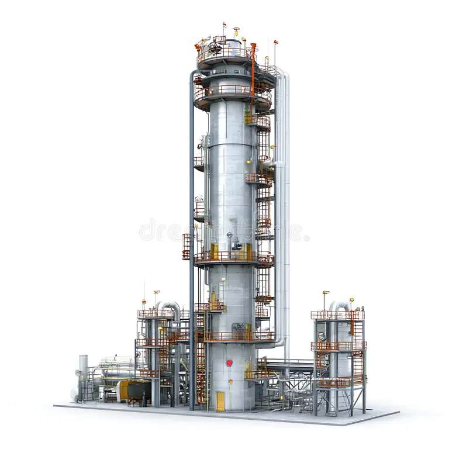
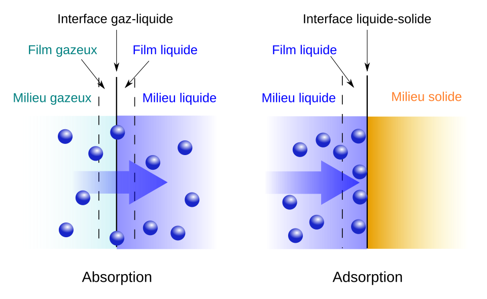

Simulation de Colonne de Distillation
Modélisation McCabe-Thiele d'une colonne binaire pour calculer le nombre de plateaux théoriques.
Bienvenue dans mon portfolio, où chaque projet raconte une histoire d'innovation et de rigueur technique. Rejoignez-moi pour explorer le monde vibrant de la simulation, de la modélisation et du développement, à travers mon expertise en génie des procédés.
Ingénieur Procédés Chimiques & Spécialiste Simulation
Ingénieur en procédés chimiques, je suis passionné par l'optimisation et la simulation des procédés industriels. Ma solide base en modélisation numérique, modélisation des procédés et en thermodynamique, alliée à ma maîtrise d'outils comme Python, MATLAB, Maple et ANSYS Fluent, me permet de concevoir et d'analyser des solutions techniques efficaces.
Des compétences diversifiées en simulation, modélisation et développement
Une sélection de mes travaux les plus significatifs

Modélisation McCabe-Thiele d'une colonne binaire pour calculer le nombre de plateaux théoriques.

Implémentation du modèle UNIFAC pour prédire les coefficients d'activité dans les mélanges liquides.
Une approche structurée pour garantir des résultats optimaux
Je commence par une compréhension approfondie du problème industriel ou académique. Cette approche collaborative garantit que chaque solution répond aux besoins spécifiques.
Ensemble, en travaillant étroitement, nous créons des modèles qui reflètent fidèlement le système étudié. En combinant théorie et pratique, nous développons des simulations précises et significatives.
Après la simulation, j'analyse les résultats pour identifier les opportunités d'optimisation et garantir que les performances correspondent aux objectifs fixés.
Que ce soit pour promouvoir une innovation ou simplement documenter un processus, je m'assure que lorsque vous recevez le livrable final, vous voyez clairement la valeur ajoutée.
Développement de modèles numériques et simulations CFD pour l'analyse et l'optimisation de procédés industriels.
Création d'applications scientifiques, d'outils d'analyse de données et d'interfaces web avec Python et ses bibliothèques.
Traitement et visualisation de données techniques, analyse statistique et création de rapports automatisés.
Application de méthodes d'optimisation pour améliorer l'efficacité énergétique et la productivité des procédés.
Que vous cherchiez une expertise en simulation, en modélisation ou en développement, j'aimerais collaborer et donner vie à vos idées. Prêt à transformer vos défis en solutions ?
Travaillons ensemble